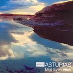

| Artist: | Asturias |
| Title: | Bird Eyes View |
| Label: | Poseidon/Musea PRF-023/FGBG 4583.AR |
| Length(s): | 25 minutes |
| Year(s) of release: | 2004 |
| Month of review: | [09/2005] |
| 1) | Adolescencia | 4.26 |
| 2) | Global Network | 5.08 |
| 3) | Distance | 5.22 |
| 4) | Bird Eyes View | 4.54 |
| 5) | Ryu-Hyo | 5.03 |
Global Network opens with piano and acoustic guitar, rather soothingly, but also somewhat sad. The violin does not make it happier, so maybe the composer is not a big fan of the global network. For the rest, the sound is pretty much the same as on the opener. The themes are a bit less striking.
Distance opens with fast dancing keys, a bit in the vein of some of Banks' piano work in Genesis. It also shares a bit of the melodicity of Banks. The piano playing alternates with similar violin, although the pace goes down a bit. I really like the piano, but the violin does less for me. Later on , the music gets to be more jazz like, late nite bar type of stuff.
Bird Eyes View is up next, combining the low warm sound of the clarinet at first with acoustic guitar, and then violin. The melody is overly sweet for my tastes, although it does have its share of nice themes as well, especially when the speed up takes place.
Ryu-Hyo is the closer, already. The song opens quite melancholically, while after a minute or so we get one of those excellent, dancing themes again. This is also where we here the folky flute for the first time.